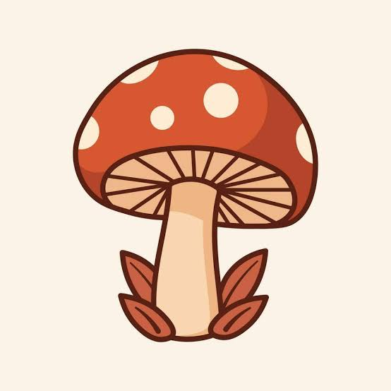

Svenskt namn
Latinskt namn
Ätlighet
Beskrivning av ätligheten
Beskrivning
Fyndplats
Utforska alla svampar som föreningen har registrerat. Tryck på ”Markera som hittad” när du har hittat en svamp så sparas den i dina fynd.

Latinskt namn
Beskrivning av ätligheten
Beskrivning
Fyndplats